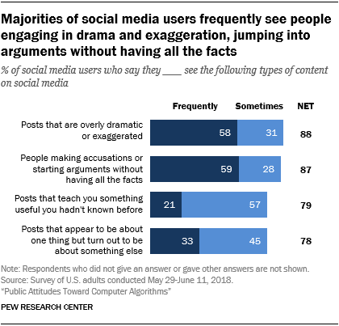
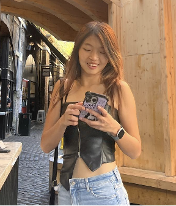
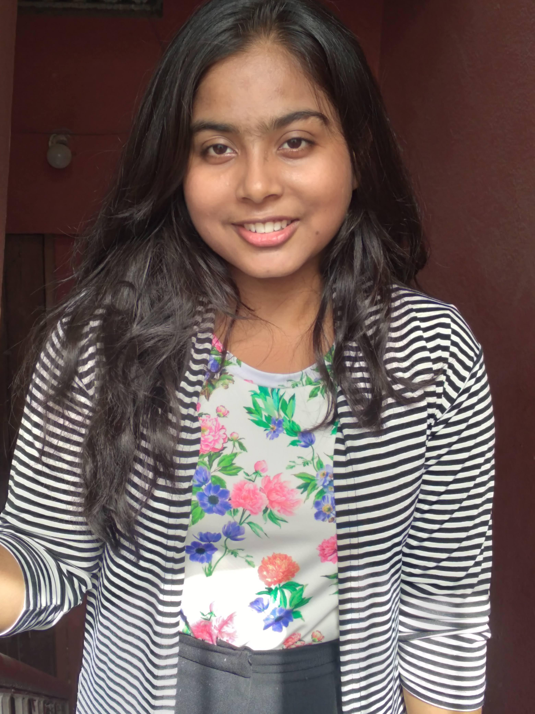

About EcoEcho
Why are we doing this?
We all know the power of social media activism
BUT
Did you know that fossil fuel companies have spent hundreds of millions of dollars to spread false and misleading content about climate change on social media?
Or that 16 of the world's biggest polluters were responsible for placing more than 1,700 of these ads on Facebook in 2021? Collectively, those ads garnered roughly 150 million impressions and have earned nearly $5 million for the platform.
"It's very hard for our democracy to function if we are operating on just completely different sets of facts”
-Former President Barack Obama

This is a problem because many people therefore don't turst social media, thinking it is over sensationalied with algorithsm only promting false, negative content and sometimes even disinformationHowever, our team believes this is overrepresented, with the data suggesting we should not downplay the ability of social media algorithms to help promote climate action. We hope to inspire future Greta Thunbergs and youth climate activists to leverage this powerful tool to promote climate action instead of being bogged down by negative belief that social media merely perpetuates negative group think
Meet The Team
We are a group of scholars from the Kode With Klossy Data Science Camp who produced this website and the data visualisations in under a week. Read below to learn more about us and how to reach out :)
Elisa See
Elisa, from Johor, Malaysia is an incoming frehsman at Harvard College planning on double concentrating (majoring) in computer science and government(political science). She loves to collect vinyls, go to the gym, read, and go to concerts & musicals. Connect with Elisa on Instagram @elisa_s_y, TikTok @elisas_y or LinkedIn

Nikita Anand
Nikita Anand, from Patna, India; is passionate about programming, business, and writing. She is majoring in Business Administration. Currently, she is part of Buildspace, learning and gaining social media marketing skills. Her hobbies include reading fictional novels and market-based case studies. LinkedIn profile

Agrima Tiwari
Agrima is a incoming law student at the Kirit P. Mehta school of law in Mumbai,India. She hopes to specialize in intellectual property law as well as advance her skills in the field of data science to keep working on projects like this one! Her hobbies include reading,sketching and crocheting. You can find her on instagram or linkedin
.jpg)
Aanandita Prakash
Aanandita Prakash is a rising senior who hopes to major in computer science. When not immersed in coding challenges, she enjoys curating her album collection, exploring obscure cinema and indulging in writing. You can find her on instagram